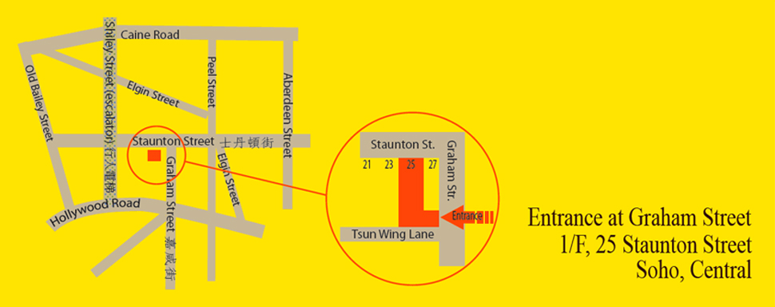

From MTR:
1) Take the MTR to Hong Kong Station
2) Exit to IFC Tower 1
3) Walk along the Hang Seng Bank building towards the Mid Levels escalator
4) Take the Mid Levels escalator to Staunton Street
5) Make a right onto Staunton Street
6) Make a right onto Graham Street
7) Look for an entrance with the Upstairs logo next to the doorbell on your right
